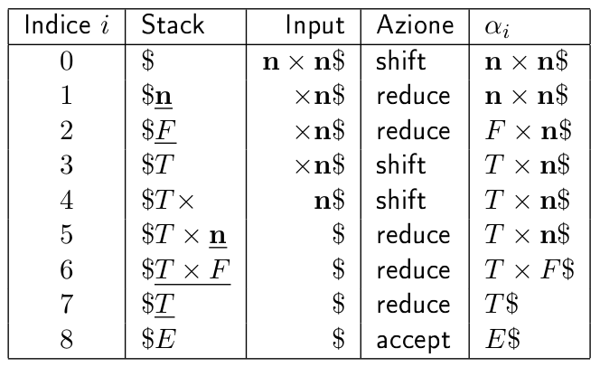
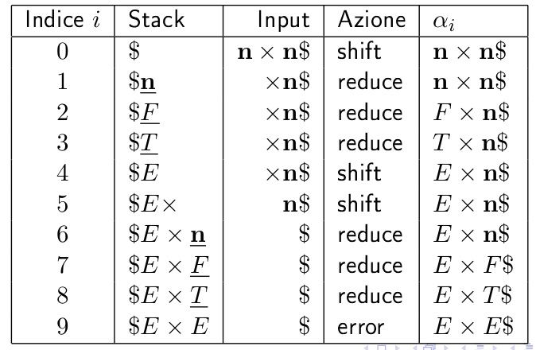
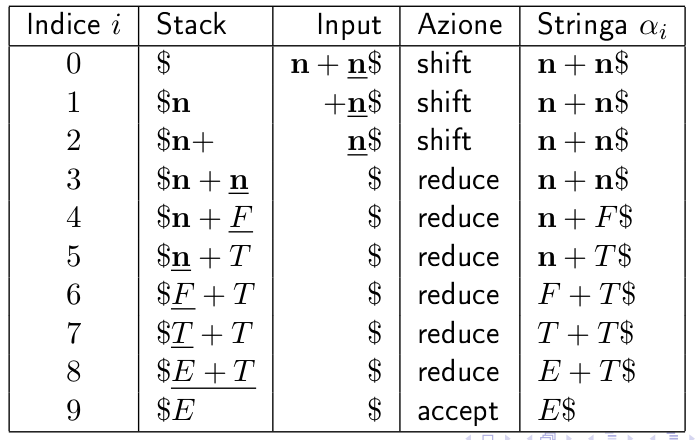
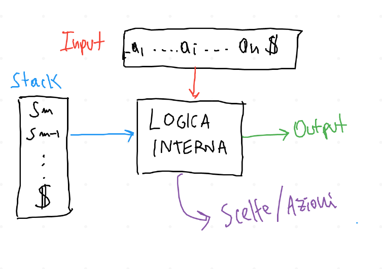

Parsing bottom-up, 10/11/22
Info
Questa pagina riassume i concetti visti a lezione. Per quanto riguarda gli esempi pratici, vengono trattati in modo estensivo sulle slide. La lezione è una breve introduzione sui parser bottom-up. Viene spiegato il loro funzionamento ad alto livello.
1 Introduzione
I parser bottom up costruiscono la catena di produzioni in modo inverso rispetto ai parser visti fin'ora. A partire dall'input, cercano di "sostituire" i caratteri con una produzione che possa generarli, fino a raggiungere l'assioma. Data una generica forma di frase
\begin{equation} \alpha_{i} = \gamma \beta \delta \end{equation}
, si cerca (ad esempio) uuna produzione come \(A \rightarrow \beta\)
che ci possa permettere di ridurre il carattere \(\beta\). La frase
diventa quindi
Se la produzione che permette di effettuare la riduzione è unica, allora la scelta da parte del parser è "obbligata". Ovviamente i problemi emergono quando possono essere applicate diverse riduzioni. Si da ora una definizione utile durante i ragionamenti che seguiranno.
\(\blacktriangleright\) si dice handle la parte destra della produzione che deve essere applicata all'inverso per effettuare l'attuale riduzione.
2 Parsing Shift-Reduce
Il parsing bottom up che prendiamo ora in esame si basa sull'uso di uno stack di appoggio, e su due operazioni fondamentali:
shift\(\rightarrow\) l'attuale token di input viene spostato dall'input ad uno stack, ovviamente in cima. Viene quindi effettuata la push di un token.reduce\(\rightarrow\) a sua volta si divide in 2 passaggi:- pop dei \(k\) elementi della handle;
- push del carattere non terminale generato dalla riduzione;
Ma dove si trova la handle? \(\Rightarrow\) è dimostrabile che la handle si trova sempre in cima allo stack! Questo non vuol dire che ogni carattere o sequenza di caratteri in cima allo stack è automaticamente una handle. Il problema è quindi proprio questo: stabilire quando la cima dello stack (cima in senso lato, la handle può essere anche ovviamente una sequenza di caratteri) è la handle.
L'idea che sta quindi alla base dell'algoritmo di parsing, è questa:
- Finchè nello stack non ho soltanto l'assioma
- Se in cima allo stack ho la handle, applico una reduction;
- altrimenti, effettuo uno shift, portando nello stack un nuovo carattere;
In realtà i parser shift-reduce devono individuare la derivazione canonica destra che si dovrebbe usare per ottenere (a partire dall'assioma) l'input di tokens.
3 Esempi
Esempio di riduzione della stringa \(n \times n\)
- Sequenza corretta \(\Downarrow\)

- Sequenza errata, in cui si applica una riduzione supponendo che in cima allo stack ci sia sempre la handle:

Se usassi un parser shift-reduce che ricostruisce una derivazione canonica sinistra, è dimostrabile (in questo esempio si può facilmente notare) che non è detto che le handle siano sempre in cima allo stack.

4 Parser LR
La specifica categoria di parser bottom-up di cui ci si occuperà è quella dei parser LR:
- L \(\rightarrow\): l'input è letto da sinistra verso destra;
- R \(\rightarrow\): tipo di derivazione canonica (Right) che viene ricostruita;
Questi parser sono essenzialmente degli automi a stati finiti, che si interfacciano con l'input e con lo stack di appoggio: \(\Downarrow\)

In particolare, ad ogni stato è associato univocamente un simbolo della grammatica. Per costruire questo tipo di automa si procede come al solito a ragionare sulla costruzione di una tabella di parsing;